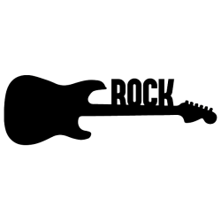

Sobre a banda
Metallica é uma banda norte-americana de heavy metal originária de Los Angeles, mas com base em San Francisco. O seu repertório inclui tempos rápidos, pesados, melódicos, instrumentais e musicalidade agressiva, a qual os consagrou como pioneiros do thrash metal e uma das bandas participantes do Big Four of Thrash, conjuntamente com Slayer, Megadeth e Anthrax.
Historia da banda
O Metallica se formou em 1981, após James Hetfield responder a um anúncio que Lars Ulrich havia colocado no jornal local. A sua formação atual apresenta o baterista fundador Lars Ulrich, e o também fundador, vocalista e guitarrista rítmico James Hetfield, além do guitarrista solo Kirk Hammett (o qual se juntou à banda em 1983, após a demissão de Dave Mustaine), e o baixista Robert Trujillo (membro desde 2003). Antes de chegarem à sua formação atual, a banda teve outros integrantes, sendo eles: Dave Mustaine (guitarra), Ron McGovney, Cliff Burton e Jason Newsted (baixo).
Membros
- James Hetfield
- Kirk Hammett
- Lars Ulrich
- Cliff Burton
- Dave Mustaine
- Robert Trujillo
- Jason Newsted
- Ron McGovney